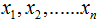
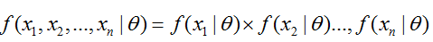
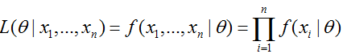
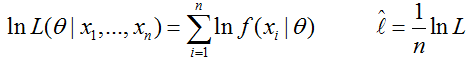
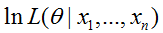
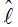
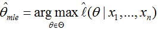
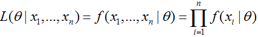
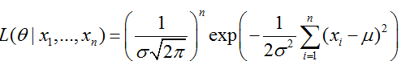
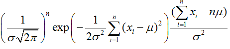

Abstract
极大似然估计，只是一种概率论在统计学的应用，它是参数估计的方法之一。最大似然估计提供了一种给定观察数据来评估模型参数的方法，即：“模型已定，参数未知”。简单而言，假设我们要统计全国人口的身高，首先假设这个身高服从服从正态分布，但是该分布的均值与方差未知。我们没有人力与物力去统计全国每个人的身高，但是可以通过采样，获取部分人的身高，然后通过最大似然估计来获取上述假设中的正态分布的均值与方差。
Mathod
最大似然估计中采样需满足一个很重要的假设，就是所有的采样都是独立同分布的。下面我们具体描述一下最大似然估计：
首先，假设为独立同分布的采样，θ为模型参数,f为我们所使用的模型，遵循我们上述的独立同分布假设。参数为θ的模型f产生上述采样可表示为:

回到上面的“模型已定，参数未知”的说法，此时，我们已知的为 ，未知为θ，故似然定义为:

在实际应用中常用的是两边取对数，得到公式如下：

其中称为对数似然，而 称为平均对数似然。而我们平时所称的最大似然为最大的对数平均似然，即：

Example：
假如有一个罐子，里面有黑白两种颜色的球，数目多少不知，两种颜色的比例也不知。我们想知道罐中白球和黑球的比例，但我们不能把罐中的球全部拿出来数。现在我们可以每次任意从已经摇匀的罐中拿一个球出来，记录球的颜色，然后把拿出来的球再放回罐中。这个过程可以重复，我们可以用记录的球的颜色来估计罐中黑白球的比例。假如在前面的一百次重复记录中，有七十次是白球，请问罐中白球所占的比例最有可能是多少？很多人马上就有答案了：70%。而其后的理论支撑是什么呢？
我们假设罐中白球的比例是p，那么黑球的比例就是1-p。因为每抽一个球出来，在记录颜色之后，我们把抽出的球放回了罐中并摇匀，所以每次抽出来的球的颜 色服从同一独立分布。这里我们把一次抽出来球的颜色称为一次抽样。题目中在一百次抽样中，七十次是白球的概率是P(Data | M)，这里Data是所有的数据，M是所给出的模型，表示每次抽出来的球是白色的概率为p。如果第一抽样的结果记为x1，第二抽样的结果记为x2… ,那么Data = (x1,x2,…,x100)。这样:
P(Data | M)
= P(x1,x2,…,x100|M)
= P(x1|M)P(x2|M)…P(x100|M)
= p^70(1-p)^30.
那么p在取什么值的时候，P(Data|M)的值最大呢？
将p^70(1-p)^30对p求导，并其等于零。
70p^69(1-p)^30-p^70*30(1-p)^29=0。
解方程可以得到p=0.7。
在边界点p=0,1，P(Data|M)=0。所以当p=0.7时，P(Data|M)的值最大。这和我们常识中按抽样中的比例来计算的结果是一样的。
假如我们有一组连续变量的采样值（x1,x2,…,xn），我们知道这组数据服从正态分布，标准差已知。请问这个正态分布的期望值为多少时，产生这个已有数据的概率最大？
P(Data | M) = ？
根据公式

可得:

对μ求导可得

,则最大似然估计的结果为
μ=(x1+x2+…+xn)/n？
由上可知最大似然估计的一般求解过程：
（1） 写出似然函数；
（2） 对似然函数取对数，并整理；
（3） 求导数 ；
（4） 解似然方程
注意：最大似然估计只考虑某个模型能产生某个给定观察序列的概率。而未考虑该模型本身的概率。这点与贝叶斯估计区别。贝叶斯估计方法将在以后的博文中描述